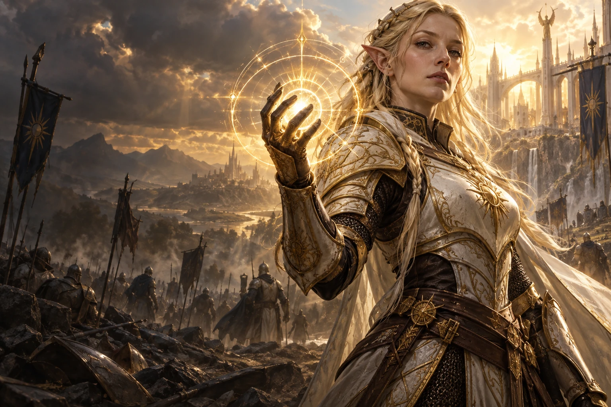

One blood.
Two worlds.
One bond.
A battlemage bound by bloodline.
A Moon Warden bound by duty.
One touch could change their world.
Two enemies.
Everything to lose.
She fights for a life of her own.
He lives to serve his people.
Neither can choose love without a cost.

The Battlemage
Her power belongs on the battlefield.
Her future has already been promised.

The Moon Warden
Authority without a crown.
What is he without his duty?
A loving father. A worthy match.
A life that is right on paper—and wrong for her.
His office. His authority. His identity.
Choosing her may mean laying all three down.
Magic is an
inheritance.
Long before solar temples or lunar rites, humans and Fae had children together. Those descendants became the first elves.
Their power comes from blood.
Their differences come from culture.
Cultural traditions, not biological limits.

One power.
Different expressions.
Inherited from the Fae.
Older than the temples of either god.
Give the unknown a shape.
Precise wards, luminous spellcraft, and disciplined forms. Sun Elves refine their inherited power through structure and control.
They see a war.
It sees a feast.
A primordial power cannot yet return in full.
First, it needs the Sun and Moon to bleed.
The catastrophe
Both factions see the hand of an enemy.
The fracture
War consumes defenders and worshippers.
The return
Weakened gods. A world less able to resist.
The exact catastrophe, the entity’s appetite, and its means of defeat remain unresolved.
Uncover the threat ↗Stone is not silent.
The depths are alive.
Dark Elven magic. Dwarven engineering.
Centuries of shared life, built into
the very bones of the world.

A living metropolis
Bridges cross luminous rivers. Towers descend from the cavern ceiling. Foundries glow beside forests of fungi.
A shared belonging
Dark Elves and dwarves live together, their craft and magic woven into a city neither could have built alone.
Under the lunar mask
A monthly celebration of renewal, where rank falls away and the continuation of the people belongs to the community.
Life beneath the earth ↗Before recognition,
an impossible pull.
Enemies first. An attraction neither understands.
Only physical contact reveals the bond.
Two powers. Still apart.
They feel the pull before they understand it. A dangerous encounter may force the first touch.
The first eclipse is a working possibility.
The bond reveals a connection; it does not erase choice.
What if vanished
never meant gone?
In the leading story direction, the Fae survived beyond a hidden threshold. The couple’s ancestry, combined power, and bond may be the key—but the ancestors will not offer an easy answer.
Beyond the vanished Fae ↗